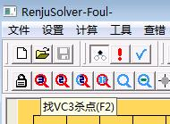

快捷键
#1 快捷键 作者：淡红的秋樱 发表时间：2010-6-10 22:24:13
连珠终结者（一种五子棋软件）的快捷键比黑石（另一种五子棋软件）好用多了。期待能更进一步。
比如黑石好多人说它算的好慢，其实我不这么看，算的越慢的黑石越稳定。一般我不到3秒钟就把黑石停了。这里黑石少一个快速暂停的键。不到3秒钟，就能发挥黑石8成功力，我又何必等待1分钟，去等待黑石发挥10成功力呢
键盘比鼠标的优越性在于快捷和方便。打过专业游戏的一般都深知，两手协同的速度，比起单手来说，不是快一点点而已。不是相差一倍，个人觉得相差10倍。
比如目前的连珠终结者的确是很强，但是他的vct通常是从最强开始算。但往往一般强的套路就没有vct。结果是卡在那里了。但是一些弱的分支的如果能快速解决，那么就能快速发现问题所在。
这里只需要一个快捷键，并不需要作者更新算法。通常我会用右手鼠标遍历一下所以的防守点，然后用左手键盘直接选择vct。速度非常快，每个点通常都只需要1秒就能解决。加起来就有些慢。
期待更多实用的快捷键。
#2 Re:快捷键 作者：小帮帮 发表时间：2010-6-11 6:47:59
看不明白，所谓的快捷键是那个键啊？
#3 Re:快捷键 作者：裁决殿雪月 发表时间：2010-6-11 14:18:08
连珠终结者（一种五子棋软件）
黑石（另一种五子棋软件）
楼主好幽默——！
#4 Re:快捷键 作者：茗弈宽容 发表时间：2010-6-11 16:08:55
茫然
#5 Re:Re:快捷键 作者：淡红的秋樱 发表时间：2010-6-11 16:36:51

比如连珠终结者（一种五子棋软件）我选择vc3，就是直接用vct（让计算机计算连续活三取胜），就可以按F2，
当然，你可以用右手的鼠标，也可用左手的键盘。明白了吗？
［ 掌棋宣传员 于 2011-1-14 18:25:32 时花20金币送鲜花一朵］
#6 Re:快捷键 作者：踏雪小子 发表时间：2011-1-14 18:06:55
明白了#7 Re:快捷键 作者：布武 发表时间：2011-1-14 23:57:10
请问一下遍历一下所以的防守点 是什么意思？ 求教